E-COMMERCE · ANALYTICS · QUERY TUNING
PostgreSQL 종합실습 4
SQL 분석 및 성능 개선 보고서
전자상거래 주문·상품·고객·재고·리뷰 데이터를 대상으로 매출, RFM, 재구매율, 재고 위험, 쿠폰 효과를 분석하고 실행 계획과 인덱스를 이용해 성능을 비교했다.
제출물 구성 — Q1~Q10의 튜닝 전·후 SQL 실행 화면과 JSON 실행 계획, Q11 안전 나눗셈 함수, Materialized View 결과를 문항 순서대로 정리했다.
LAB OVERVIEW
02분석 범위와 튜닝 절차
전자상거래 데이터 영역
- orders · order_items — 주문 상태, 채널, 쿠폰, 판매 금액
- products · categories — 제품 및 카테고리 성과
- customers — RFM, 재구매율, 상위 고객
- inventory · reviews — 품절 위험 및 효자상품
성능 검증 기준
- 동일 결과를 반환하는 튜닝 전·후 SQL 비교
EXPLAIN (ANALYZE, BUFFERS)JSON 원본 보존- Execution Time, Scan, Join, Buffers 변화 확인
- 인덱스가 선택되지 않은 경우 데이터 규모와 선택도 분석
튜닝 전
실행계획 부분·커버링
인덱스 SQL 구조
단순화 튜닝 후
실행계획 MV
리포트
실행계획 부분·커버링
인덱스 SQL 구조
단순화 튜닝 후
실행계획 MV
리포트
튜닝 전·후 캡처에서 동일한 컬럼과 결과가 반환되는지 확인했다.
문항별 JSON 파일에 SQL 전체와 실행 계획, Planning/Execution Time을 보존했다.
Q1·Q5·Q8처럼 개선되지 않은 측정도 포함하고 원인을 기록했다.
밀리초 단위 단일 실행은 캐시와 시스템 부하의 영향을 받을 수 있다.
ROLLING 1 MONTH · GMV
03지난 한 달 실제 판매 금액
튜닝 전 Seq Scan
{kind=link}
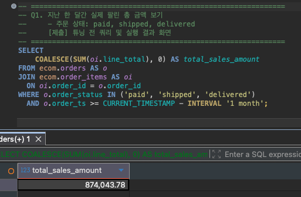
튜닝 후 Index Only Scan
{kind=link}
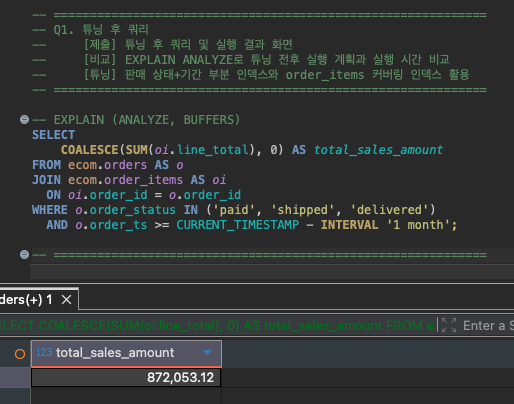
idx_orders_sales_ts_customer를 사용해 orders 버퍼가 줄었으나 order_items 전체 스캔 비용이 남았다.판단 — 최상위 공유 버퍼는 177에서 151로 감소했지만 실행 시간은 0.018ms 증가해 사실상 동일했다. 선택된 주문이 많고 order_items 11,012행을 모두 읽으므로 인덱스 전환만으로는 유의미한 개선이 없었다.
MONTHLY KPI · AOV
04월별 주문 수·매출·평균 주문액
튜닝 전 2단계 HashAggregate
{kind=link}
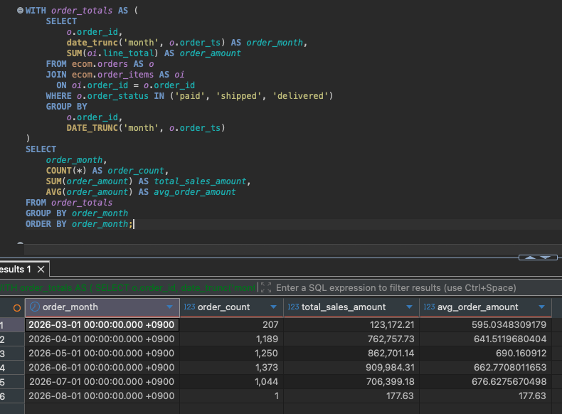
튜닝 후 통계 갱신
{kind=link}
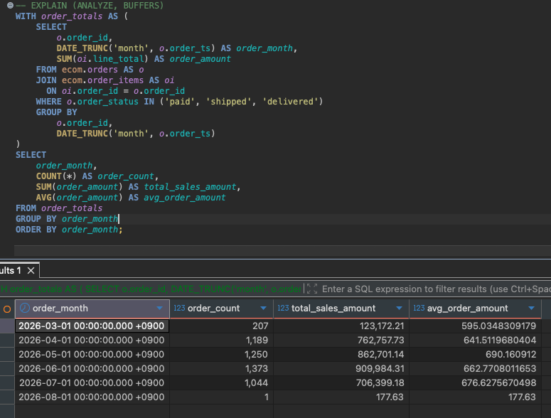
판단 — 월별 전체 리포트는 판매 주문 대부분을 읽어야 하므로 Seq Scan과 HashAggregate가 합리적이다. 이 유형은 인덱스보다 일별 Materialized View를 월별로 재집계하는 방식이 확장성에 유리하다.
CATEGORY PERFORMANCE
05최근 90일 카테고리 매출
튜닝 전 orders Seq Scan
{kind=link}
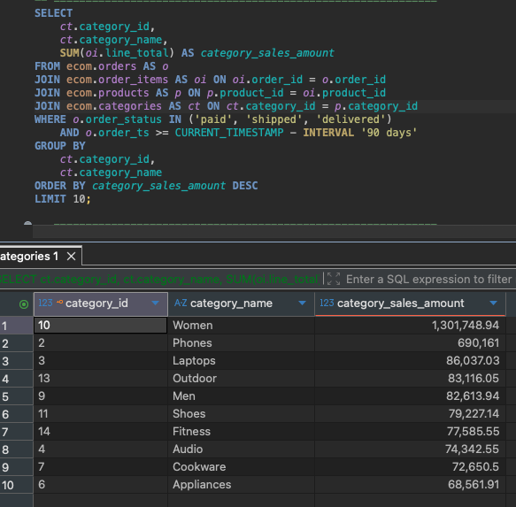
튜닝 후 orders Index Only
{kind=link}
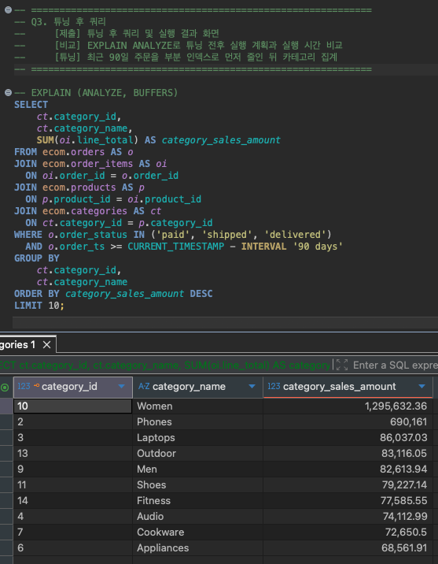
결과 — Women 카테고리가 1,301,748.94로 1위였다. 인덱스가 선택됐지만 대상 기간이 넓어 버퍼는 185에서 271로 증가했고 시간 개선도 4.4%로 제한적이었다.
PRODUCT RANKING · TOP 20
06제품별 누적매출 순위
튜닝 전 CTE 2단계
{kind=link}
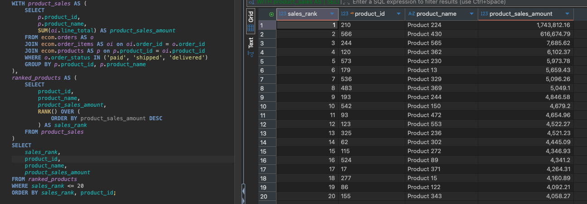
튜닝 후 집계+RANK 통합
{kind=link}
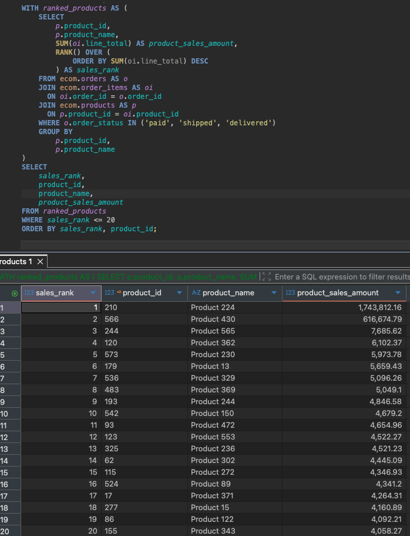
판단 — 공유 버퍼는 184로 동일하고 주요 노드도 HashAggregate·WindowAgg로 유지됐으나 측정 실행 시간은 59.3% 감소했다. 구조 단순화 효과와 캐시 영향을 함께 고려해야 하며 반복 측정으로 재확인이 필요하다.
CUSTOMER VALUE
07고객별 RFM 분석
튜닝 전 주문별 선집계
{kind=link}
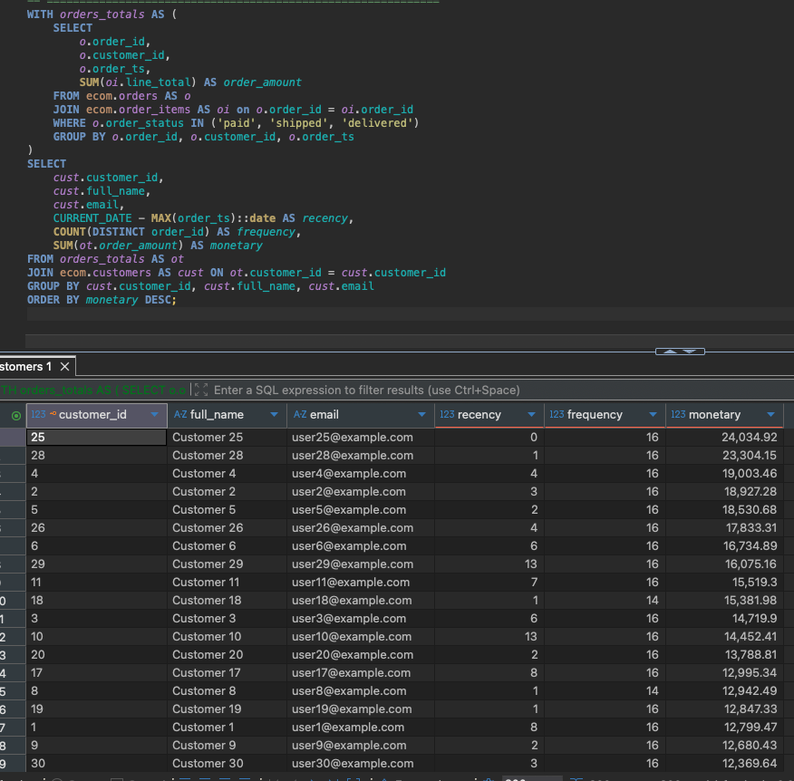
튜닝 후 직접 고객 집계
{kind=link}
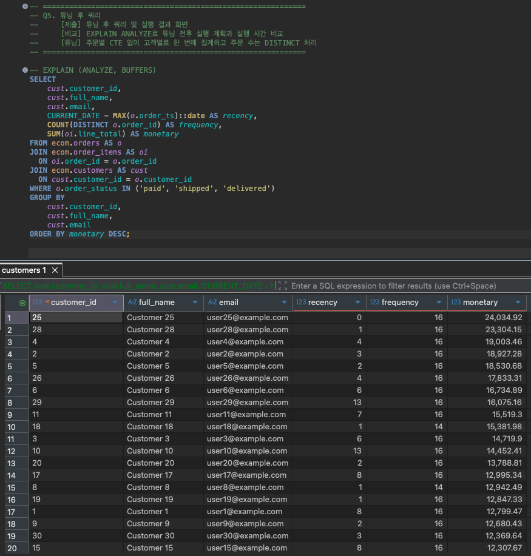
COUNT(DISTINCT order_id)로 빈도를 계산했지만 더 많은 상품 행을 GroupAggregate에 전달했다.회귀 분석 — 단일 집계로 단순화했지만 GroupAggregate 입력이 주문 5,064행에서 상품 8,421행 수준으로 늘어 실행 시간이 증가했다. 이 문항은 튜닝 전의 주문별 선집계 구조를 유지하는 것이 더 적절하다.
RETENTION · COHORT
08첫 구매 후 30일 내 재구매율
튜닝 전 상관 EXISTS
{kind=link}
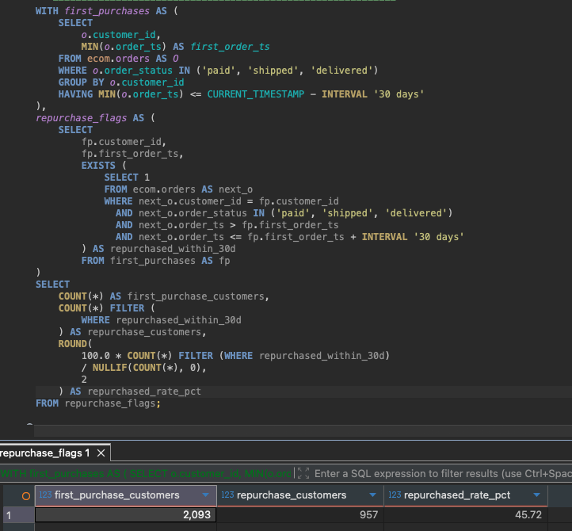
튜닝 후 Window 1회 처리
{kind=link}
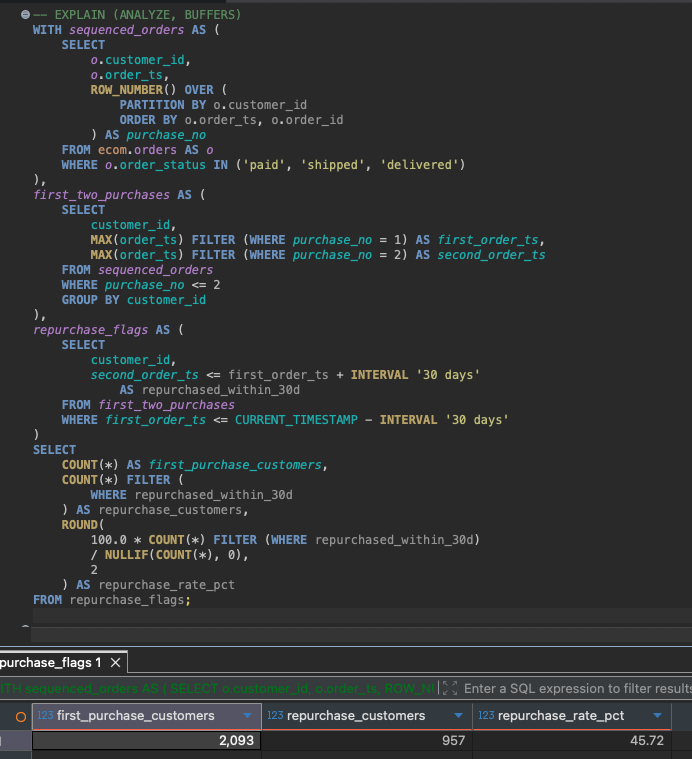
핵심 개선 — 기존 계획은 고객당 Index Scan을 두 차례, 총 2,093 loops씩 수행했다. 튜닝 후 부분 커버링 인덱스의 Index Only Scan과 WindowAgg 한 번으로 바뀌어 버퍼가 98.6% 감소했다.
STOCKOUT RISK
09재고가 임계치보다 낮은 상품
튜닝 전 Seq Scan
{kind=link}
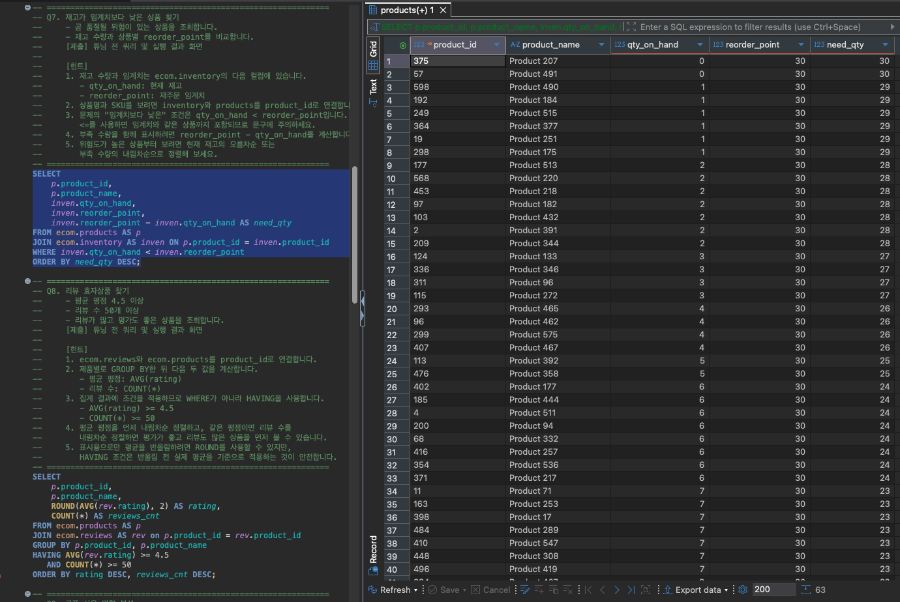
튜닝 후 Seq Scan 유지
{kind=link}
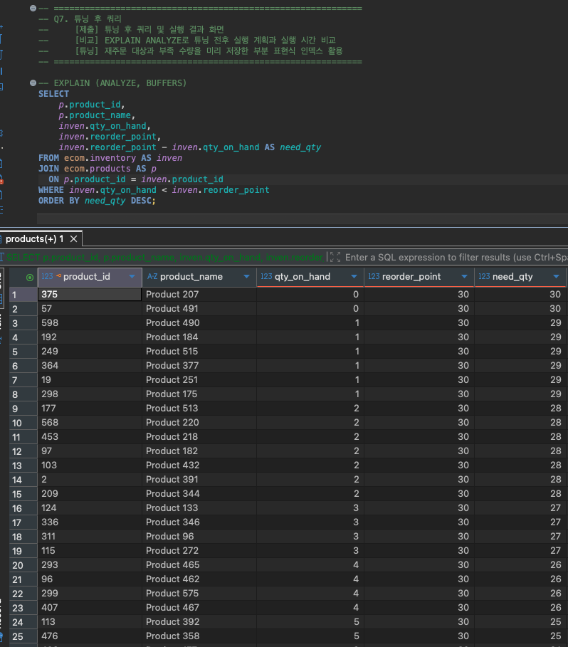
판단 — 실행 시간은 0.051ms 줄었지만 절대 차이가 매우 작고 계획·버퍼(12)가 동일하다. 데이터가 증가하고 위험 상품 비율이 낮아질 때 부분 인덱스의 효과가 커질 수 있다.
REVIEW QUALITY
10평점 4.5 이상·리뷰 50개 이상
튜닝 전 HashAggregate
{kind=link}
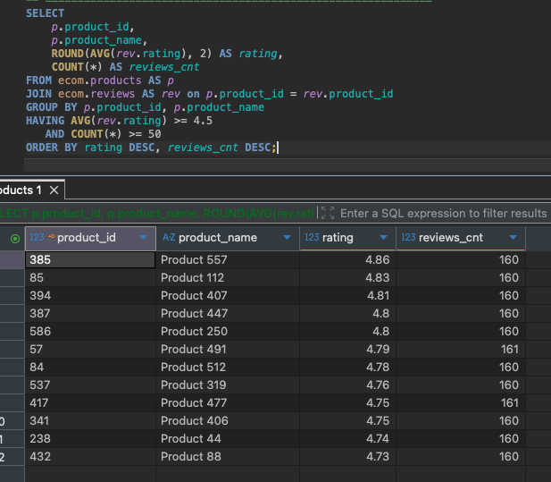
튜닝 후 Seq Scan 유지
{kind=link}
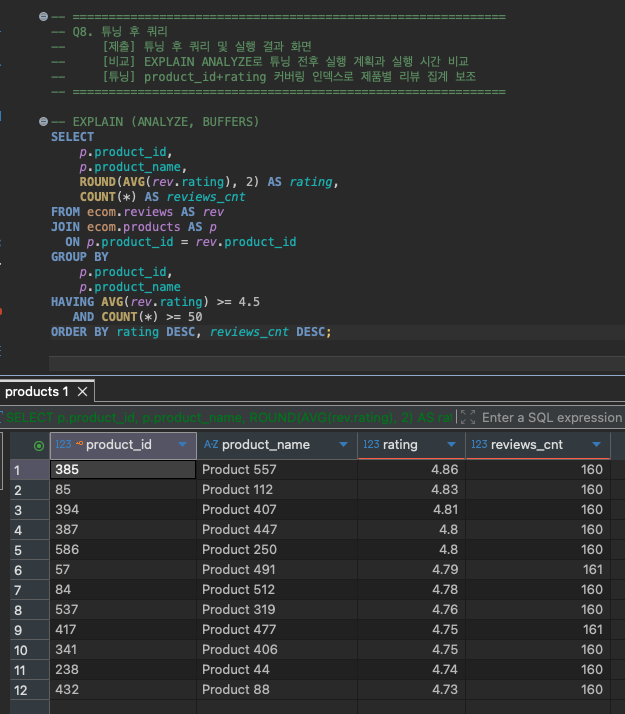
회귀 분석 — 실행 계획과 버퍼 29는 동일하므로 인덱스 효과가 없고 단일 실행 변동이 크게 나타났다. 이 규모에서는 Seq Scan이 적절하며, 반복 측정 중앙값으로 검증하거나 인덱스 추가를 보류하는 편이 낫다.
COUPON VS NO COUPON
11쿠폰 사용 여부별 평균 주문 금액
튜닝 전 문자열 그룹
{kind=link}
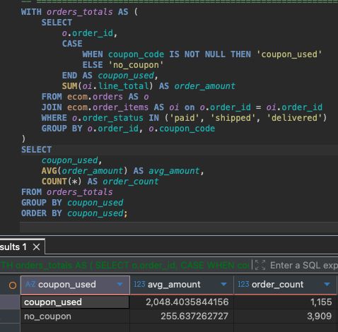
튜닝 후 Boolean 그룹
{kind=link}
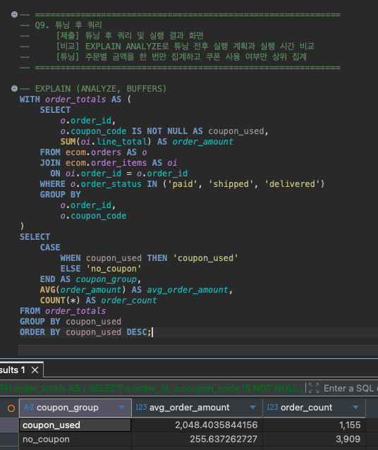
해석 — 시드 데이터에서 쿠폰 주문은 더 비싼 상품·더 많은 품목과 수량을 선택하도록 생성됐다. 따라서 쿠폰이 매출을 인과적으로 8배 높였다는 뜻이 아니라, 쿠폰 사용 주문에서 높은 AOV가 관찰됐다는 의미다.
TOP CUSTOMER SEGMENT
12상위 1% 고객의 최근 60일 매출
튜닝 전 orders Seq Scan
{kind=link}
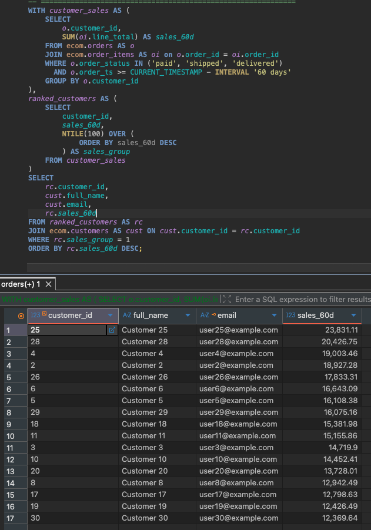
튜닝 후 orders Index Only
{kind=link}
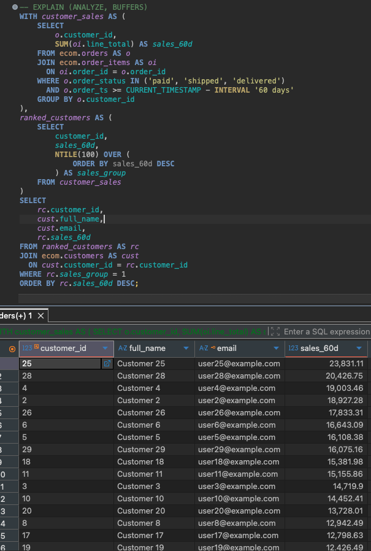
개선 — orders 접근이 Seq Scan에서
idx_orders_sales_ts_customer Index Only Scan으로 바뀌어 30.1% 단축됐다. 최종 17명은 customers 기본 키 Index Scan으로 연결됐다.REUSABLE DATABASE OBJECTS
13안전 나눗셈과 일별 GMV
{kind=link}
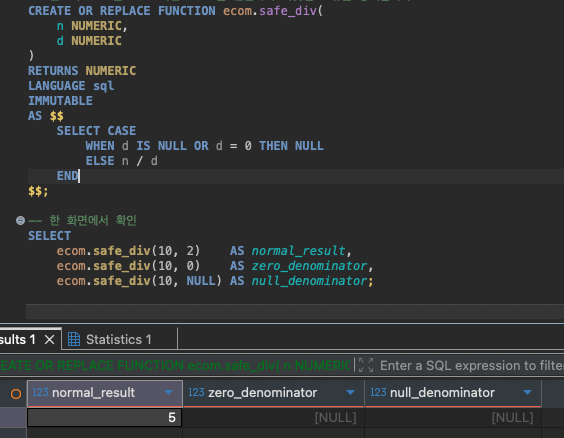
Materialized View 매번 주문 테이블을 JOIN·SUM하지 않고 일별 GMV를 저장Daily Report
CREATE MATERIALIZED VIEW IF NOT EXISTS ecom.mv_daily_gmv AS
SELECT DATE_TRUNC('day', o.order_ts) AS day,
SUM(oi.line_total) AS gmv
FROM ecom.orders o
JOIN ecom.order_items oi ON oi.order_id = o.order_id
WHERE o.order_status IN ('paid','shipped','delivered')
GROUP BY DATE_TRUNC('day', o.order_ts);
CREATE UNIQUE INDEX ux_mv_daily_gmv_day
ON ecom.mv_daily_gmv(day);
REFRESH MATERIALIZED VIEW ecom.mv_daily_gmv;
갱신 전략 — 데이터 변경 주기에 맞춰 매일 오후 3시 일반 REFRESH를 실행한다. 운영 중 조회 차단을 피해야 하면 고유 인덱스 생성 후 CONCURRENTLY 갱신을 적용한다.
{kind=link}
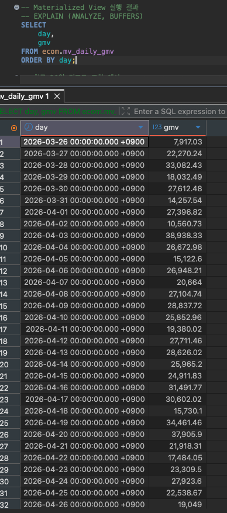
{kind=link}
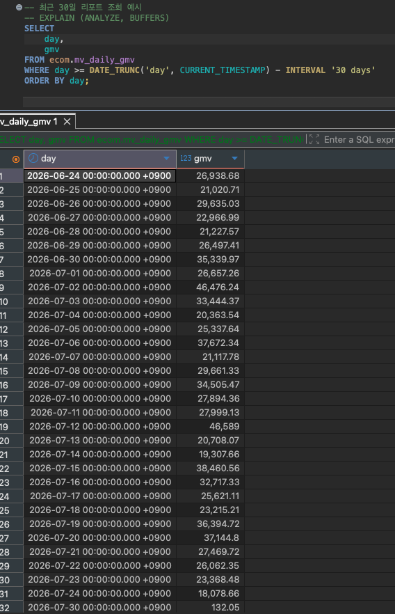
BEFORE / AFTER SUMMARY
14Q1~Q10 실행 시간 비교
| 문항 | 튜닝 전 | 튜닝 후 | 변화 | 주요 실행 계획 변화 |
|---|---|---|---|---|
| Q1 | 3.484 ms | 3.502 ms | 0.5% 증가 | orders Seq Scan → Index Only Scan, 전체 시간은 동일 수준 |
| Q2 | 12.356 ms | 10.908 ms | 11.7% 감소 | Hash Join·2단계 HashAggregate 유지 |
| Q3 | 8.194 ms | 7.834 ms | 4.4% 감소 | orders Seq Scan → Index Only Scan |
| Q4 | 25.163 ms | 10.234 ms | 59.3% 감소 | 집계와 RANK CTE 통합, 주요 노드는 동일 |
| Q5 | 12.987 ms | 14.895 ms | 14.7% 증가 | 주문별 선집계 제거 후 GroupAggregate 입력 증가 |
| Q6 | 8.567 ms | 3.639 ms | 57.5% 감소 | 반복 Index Scan → Index Only Scan + WindowAgg |
| Q7 | 0.210 ms | 0.159 ms | 24.3% 감소 | 소규모 테이블로 Seq Scan 유지 |
| Q8 | 0.914 ms | 2.062 ms | 125.6% 증가 | 커버링 인덱스 미선택, 동일 계획에서 측정 변동 |
| Q9 | 9.893 ms | 7.877 ms | 20.4% 감소 | Boolean 그룹화, HashAggregate 유지 |
| Q10 | 6.072 ms | 4.246 ms | 30.1% 감소 | orders Seq Scan → Index Only Scan |
| 합계 | 87.840 ms | 65.356 ms | 25.6% 감소 | 캡처된 각 1회 실행 시간의 단순 합계 |
- 가장 큰 구조적 개선 · Q6상관 서브쿼리의 반복 접근을 Window 처리로 바꾸면서 shared buffer가 10,354에서 146으로 감소했다.
- 인덱스 효과 · Q10판매 상태·기간 부분 인덱스가 최근 60일 조회에 선택돼 30.1% 단축됐다.
- 회귀 · Q5CTE 제거가 항상 튜닝은 아니다. 주문별 선집계가 데이터량을 먼저 줄여 더 유리했다.
- 소규모 데이터 · Q7/Q8전체 테이블이 작거나 다수 행을 집계하면 옵티마이저가 Seq Scan을 유지하는 것이 정상이다.
PHYSICAL JOIN STRATEGY
15세 가지 물리적 JOIN 방식
| 구분 | Nested Loop Join | Hash Join | Merge Join |
|---|---|---|---|
| 원리 | 외부 입력의 각 행마다 내부 입력 탐색 | 작은 입력으로 해시를 만들고 큰 입력을 Probe | 정렬된 양쪽 입력을 동시에 순차 탐색 |
| 적합한 규모 | 소량 결과, 높은 선택도 | 대량 동등 조인 | 정렬된 대량 입력 |
| 인덱스 | 내부 조인 키 인덱스가 중요 | 인덱스 없이도 활용 가능 | 정렬 인덱스가 있으면 Sort 회피 |
| 주의점 | 외부 행이 많으면 내부 탐색 반복 증가 | 메모리 부족 시 Hash Batch·Spill | 입력 미정렬 시 사전 Sort 비용 |
| 이번 계획 | Q10에서 상위 17명과 customers PK 연결 | 다수 문항의 orders·order_items 결합 | 이번 측정에서는 선택되지 않음 |
Nested Loop
소수 고객을 기본 키로 조회하는 Q10의 최종 JOIN처럼 외부 결과가 작고 내부 인덱스가 있을 때 적합하다.
Hash Join
Q1~Q5, Q8~Q10처럼 주문상품 다수를 동등 조건으로 결합할 때 반복 탐색을 피하고 대량 처리에 유리하다.
Merge Join
양쪽 입력이 조인 키로 정렬됐거나 정렬 비용을 이후 연산에서도 활용할 수 있을 때 경쟁력이 생긴다.
JOIN 선택의 핵심
특정 JOIN 방식을 무조건 강제하는 것이 아니라 통계, 실제 행 수, 인덱스, 메모리와 정렬 상태를 개선해 옵티마이저가 적합한 계획을 고르도록 해야 한다.
DATABASE ENGINE OPTIMIZER
16엔진별 실행 계획 특징
| 항목 | PostgreSQL | MySQL | Oracle | SQL Server |
|---|---|---|---|---|
| 방식 | 비용 기반 | 비용 기반 | CBO | 비용 기반 |
| 실제 계획 | EXPLAIN ANALYZE | EXPLAIN ANALYZE / TREE | DBMS_XPLAN DISPLAY_CURSOR | Actual Execution Plan |
| JOIN | NL·Hash·Merge | NL 계열·Hash | NL·Hash·Sort Merge | NL·Hash Match·Merge |
| 접근 특징 | Index/Bitmap Scan, Memoize | ref·range·eq_ref, BKA | Index Range Scan, 병렬·파티션 | Index Seek, Key Lookup |
| 계획 관리 | 통계·설정·확장 | 힌트·optimizer 설정 | SQL Plan Baseline | Query Store Plan Forcing |
| 메모리 주의 | work_mem, temp, Hash Batch | 내부 temp·hash 비용 | TEMP, PGA, 병렬 실행 | Memory Grant, TempDB Spill |
- PostgreSQL예상 rows와 actual rows, loops, buffers를 함께 보고 ANALYZE 통계와 인덱스를 우선 개선한다.
- MySQL기본 표 형식만으로 Hash Join이 명확하지 않을 수 있어 FORMAT=TREE와 실제 실행 분석을 병행한다.
- OracleE-Rows와 A-Rows 차이, Buffers·Reads·TempSpc를 확인하고 검증된 계획은 Baseline으로 관리할 수 있다.
- SQL ServerEstimated/Actual Rows, Memory Grant, Spill, Seek Predicate를 보고 Query Store로 성능 변화를 추적한다.
공통 원칙 — 엔진마다 노드 이름과 계획 관리 기능은 다르지만 카디널리티 추정, 접근 경로, 반복 횟수, 메모리와 Spill을 함께 본다는 원칙은 동일하다.
CONCLUSION
17분석 결과와 개선 방향
비즈니스 결과
최근 한 달 GMV는 874,043.78, 30일 재구매율은 45.72%, 쿠폰 사용 주문 AOV는 2,048.40으로 집계됐다.
성능 결과
10개 캡처 실행 시간 합계는 25.6% 감소했으며 Q6의 반복 탐색 제거가 가장 명확한 구조적 개선이었다.
운영 결과
일별 GMV를 Materialized View로 저장하고 오후 3시 갱신 전략과 동시 갱신 조건을 마련했다.
최종 결론
인덱스 생성 자체가 항상 성능 향상을 보장하지 않았다. 선택도가 높은 기간 검색과 반복 접근 제거에서는 효과가 컸지만, 작은 테이블이나 대부분의 행을 집계하는 쿼리에서는 Seq Scan이 합리적이었다. 또한 Q5처럼 CTE를 제거해 SQL을 짧게 만드는 것이 오히려 더 많은 행을 상위 집계에 전달할 수 있음을 확인했다.
튜닝 전·후 SQL과 실행 결과 이미지 20개를 문항별로 연결했다.
JSON 원본 20개에서 실행 시간, 스캔, 조인, 버퍼를 확인했다.
정상 나눗셈, 0 분모, NULL 분모의 동작을 검증했다.
생성·인덱스·갱신 스크립트와 전체·30일 조회 결과를 포함했다.
Nested Loop, Hash, Merge Join의 원리와 적용 조건을 비교했다.
PostgreSQL, MySQL, Oracle, SQL Server의 특징을 별도 원문과 요약표로 정리했다.